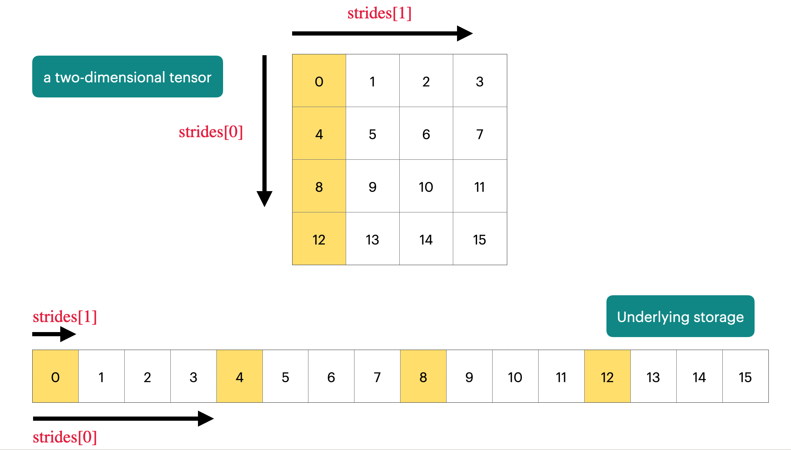

install.packages("torch")Introduction to Torch Tensors
Torch Overview and Resources
- Torch Website: https://torch.mlverse.org/
- API Docs: https://torch.mlverse.org/docs/
- Book by Sigrid Kyedana: Deep Learning and Scientific Computing with R torch
- As
torchfor R followsPyTorchquite closely, you can also consult docs for the latter
Installation
In order to use torch, you can install it from CRAN:
Afterwards, you have to run:
torch::install_torch()If both commands succeed, you are ready to go. Otherwise, you can consult this guide on how to install torch. You can check whether you have successfully installed cuda support (requires an NVIDIA GPU) by running:
library(torch)
cuda_is_available()[1] FALSETorch Tensors
Tensors are the fundamental data structure in torch, serving as the backbone for both deep learning and scientific computing operations. While similar to R matrices, tensors offer enhanced capabilities that make them particularly suited for modern computational tasks, namely gpu acceleration and automatic differentation (autograd).
Creating Tensors
# From R matrices
x_matrix <- matrix(1:6, nrow = 2, ncol = 3)
tensor_x <- torch_tensor(x_matrix)
print(tensor_x)torch_tensor
1 3 5
2 4 6
[ CPULongType{2,3} ]zeros_tensor <- torch_zeros(2, 3) # Creates tensor of zeros
ones_tensor <- torch_ones(2, 3) # Creates tensor of ones
like_tensor <- torch_zeros_like(ones_tensor) # Creates zeros tensor with same shape as ones_tensorRandom Sampling
You can also randomly sample torch tensors:
normal_tensor <- torch_randn(2, 3) # Samples from N(0,1)
uniform_tensor <- torch_rand(2, 3) # Samples from U(0,1)
Random Seeds in torch
torch maintains its own random number generator, separate from R’s.
Setting R’s random seed with set.seed() will not affect torch’s random operations. Instead, use torch_manual_seed() to control reproducibility in torch operations.
Missing Values
Torch tensors don’t have a native representation for R’s NA values. When converting R vectors containing NAs to torch tensors, you need to be careful:
Double:
NA_real_becomesNaNtorch_tensor(NA_real_)torch_tensor nan [ CPUFloatType{1} ]Integer:
NA_integer_becomes smallest negative value:torch_tensor(NA_integer_)torch_tensor -2.1475e+09 [ CPULongType{1} ]Logical:
NAbecomesTRUE:torch_tensor(NA)torch_tensor 1 [ CPUBoolType{1} ]
One should therefore handle missing values carefully before converting them to torch tensors.
Tensor Properties
Shape
Like R arrays, each tensor has a shape and a dimension:
print(tensor_x$shape)[1] 2 3print(tensor_x$dim()) # dim(tensor_x) also works[1] 2Data Type
Furthermore, each tensor has a dataype. As opposed to base R, where one usually has one integer type (32 bits) and one floating point type (double, 64 bits), torch differentiates between different precisions:
Floating point:
float32_tensor <- torch_ones(2, 3, dtype = torch_float32()) # Default float float64_tensor <- torch_ones(2, 3, dtype = torch_float64()) # Double precision float16_tensor <- torch_ones(2, 3, dtype = torch_float16()) # Half precisionUsually one works with 32-bit floats.
Integer:
int32_tensor <- torch_ones(2, 3, dtype = torch_int32()) int64_tensor <- torch_ones(2, 3, dtype = torch_int64()) # Long int16_tensor <- torch_ones(2, 3, dtype = torch_int16()) # Short int8_tensor <- torch_ones(2, 3, dtype = torch_int8()) # Byte uint8_tensor <- torch_ones(2, 3, dtype = torch_uint8()) # Unsigned byteBoolean:
bool_tensor <- torch_ones(2, 3, dtype = torch_bool())
You can convert between datatypes using the $to() method:
# Converting between datatypes
x <- torch_ones(2, 3) # Default float32
x_int <- x$to(dtype = torch_int32())Note that floats are converted to integer by truncating and not by rounding.
torch_tensor(2.999)$to(dtype = torch_int())torch_tensor
2
[ CPUIntType{1} ]torch_tensor(-2.999)$to(dtype = torch_int())torch_tensor
-2
[ CPUIntType{1} ]Device
Each tensor lives on a “device”, where common options are:
- cpu for CPU, which is available everywhere
- cuda for NVIDIA GPUs
- mps for Apple Silicon (M1/M2/M3) GPUs on macOS
# Create a tensor and move it to CUDA if available
x <- torch_randn(2, 3)
if (cuda_is_available()) { # Check if cuda is available
x <- x$to(device = torch_device("cuda"))
# x <- x$cuda() also works
} else {
print("CUDA not available, tensor remains on CPU")
}[1] "CUDA not available, tensor remains on CPU"print(x$device)torch_device(type='cpu') x <- x$to(device = "cpu")
# x <- x$cpu() also works
print(x$device)torch_device(type='cpu') GPU acceleration enables massive parallelization of tensor operations, often providing 10-100x speedups compared to CPU processing for large-scale computations.
Device Compatibility
Tensors must be on the same device to perform operations between them.
Converting Tensors Back to R
You can easily convert torch tensors back to R using as_array(), as.matrix() or $item():
\(0\)-dimensional tensors (scalars) are converted to R vectors with length 1:
torch_scalar_tensor(1)$item() # as_array() also works[1] 1\(1\)-dimensional tensors are converted to R vectors:
as_array(torch_randn(3))[1] 1.8020784 1.9333985 0.8108145\(>1\)-dimensional tensors are converted to R arrays:
as_array(torch_randn(2, 2))[,1] [,2] [1,] -0.629516 1.480781 [2,] 1.515841 -1.890025
Basic Tensor Operations
Torch provides two main syntaxes for tensor operations: function-style (torch_*()) and method-style (using $).
Here’s an example with matrix multiplication:
# Create example tensors
a <- torch_tensor(matrix(1:6, nrow=2, ncol=3))
b <- torch_tensor(matrix(7:12, nrow=3, ncol=2))
# Matrix multiplication - two equivalent ways
c1 <- torch_matmul(a, b) # Function style
c2 <- a$matmul(b) # Method style
torch_equal(c1, c2)[1] TRUEBelow, there is another example using addition:
# Addition - two equivalent ways
x <- torch_ones(2, 2)
y <- torch_ones(2, 2)
z1 <- torch_add(x, y) # Function style
z2 <- x$add(y) # Method style
In-place Operations
Operations that modify the tensor directly are marked with an underscore suffix (_). These operations are more memory efficient as they don’t create a new tensor:
x <- torch_ones(2, 2)
x$add_(1) # Adds 1 to all elements in-placetorch_tensor
2 2
2 2
[ CPUFloatType{2,2} ]xtorch_tensor
2 2
2 2
[ CPUFloatType{2,2} ]You can also apply common summary functions to torch tensors:
x = torch_randn(1000)
mean(x)torch_tensor
0.0246532
[ CPUFloatType{} ]max(x)torch_tensor
3.43564
[ CPUFloatType{} ]sd(x)[1] 1.021939Broadcasting Rules
Another difference between R arrays and torch tensors is how operations on tensors with different shapes are handled. For example, in R, we cannot add a matric with shape (1, 2) to a matrix with shape (2, 3):
m1 = matrix(1:4, nrow = 2)
m2 = matrix(1:2, nrow = 2)
m1 + m2Error in m1 + m2: non-conformable arraysBroadcasting (Similar to “recycling” in R) allows torch to perform operations between tensors of different shapes.
t1 = torch_tensor(m1)
t2 = torch_tensor(m2)
t1 + t2torch_tensor
2 4
4 6
[ CPULongType{2,2} ]There are some strict rules the define when two shapes are compatible:
- If tensors have different ranks (number of dimensions), prepend 1’s to the shape of the lower rank tensor until ranks match
- Two dimensions are compatible when:
- They are equal, or
- One of them is 1 (which will be stretched to match the other)
- If any dimension pair is incompatible, broadcasting fails
Quiz: Broadcasting Rules
Question 1: What would be the result shape when broadcasting a tensor of shape (2, 1, 3) with a tensor of shape (4, 3)?
Click for answer
The result shape would be (2, 4, 3). Here’s why:
- We prepend one to the rank of the second tensor to get
(1, 4, 3). - Going dimension by dimension:
- First: 2 vs 1 -> Compatible, expands to 2
- Second: 1 vs 4 -> Compatible, expands to 4
- Third: 3 vs 3 -> Compatible, stays 3
- All pairs are compatible, so broadcasting succeeds
Question 2: Would broadcasting work between tensors of shape (2, 3) and (3, 2)?
Click for answer
No, broadcasting would fail in this case. Here’s why:
- Both tensors have the same rank (2), so no prepending needed
- Going dimension by dimension:
- First: 2 vs 3 -> Incompatible (neither is 1)
- Second: 3 vs 2 -> Incompatible (neither is 1)
- Since both dimension pairs are incompatible, broadcasting fails
Reshaping Tensors
Torch provides several ways to reshape tensors while preserving their data:
# Create a sample tensor
x <- torch_tensor(0:15)
print(x)torch_tensor
0
1
2
3
4
5
6
7
8
9
10
11
12
13
14
15
[ CPULongType{16} ]We can reshape this tensor with shape (16) to a tensor with shape (4, 4).
y = x$reshape(c(4, 4))
ytorch_tensor
0 1 2 3
4 5 6 7
8 9 10 11
12 13 14 15
[ CPULongType{4,4} ]When x is reshaped to y, we can imagine it as initializing a new tensor of the desired shape and then filling up the rows and columns of the new tensor by iterating over the the rows and columns of the old tensor:
y2 = torch_zeros(4, 4)
for (j in 1:4) { # columns
for (i in 1:4) { # rows
y2[i, j] = y[i, j]
}
}
sum(abs(y - y2))torch_tensor
0
[ CPUFloatType{} ]
Important
Torch tensors are in row-major format and it is important to remember this order, i.e. iterate first fill up rows, then columns etc. when reshaping.
Internally, this type of reshaping is (in many cases) implemented by changing the stride of the tensor, without changing the underlying data.
x$stride()[1] 1y$stride()[1] 4 1The value of the stride indicates how many elements to skip to get to the next element along each dimension: If we go from element x[1] (1) to element x[2] (2), we move one index along the columns of y. If we walk from x[1] to x[5] (5), i.e. 4 steps, we move one index along the rows of y.
This means, e.g., that reshaping torch tensors can be considerably more efficient than transposing R arrays, as the latter will always allocate a new, reordered vector, while the former just changes the strides.
The functionality of strides is visualized in the image below.
TODO: Include image  Source: How to Represent a Tensor or ndarray
Quiz: Strides
Question 1: How do you need to change the strides from a matrix with strides (4, 1) to transpose it?
Click for answer
The matrix can be transposed by changing the strides from (4, 1) to (1, 4).
y$t()$stride()[1] 1 4When reshaping tensors, one can also infer a dimension by setting it to -1:
x$reshape(c(-1, 4))$shape[1] 4 4Of course, not all reshaping operations are valid. The number of elements of the original tensor and the reshaped tensor must be the same:
x$reshape(6)Error in (function (self, shape) : shape '[6]' is invalid for input of size 16Reference Semantics
One key property of torch tensors is that they have references semantics. This is different from R, where objects usually have value semantics.
x <- torch_ones(2)
y <- x
y[1] <- 5
x # was modifiedtorch_tensor
5
1
[ CPUFloatType{2} ]This is different from R, where one usually has value semantics:
x <- c(1, 1)
y <- x
y[1] <- 5
x # was not modified[1] 1 1When one tensor (y) shares underlying data with another tensor (x) this is called a view: It is also possible to get a view on a subset of a tensor, e.g. via slicing:
x = torch_arange(1, 10)
y = x[1:3]
y[1] = 100
x[1]torch_tensor
100
[ CPUFloatType{} ]Unfortunately, the similar operations might sometimes create a view and other times allocate a new tensor. In the example below, we create a subset that is a non-contiguous sequence and hence a new tensor is allocated:
x = torch_arange(1, 10)
y = x[c(1, 3, 5)]
y[1] = 100
x[1]torch_tensor
1
[ CPUFloatType{} ]If it is important to create a copy of a vector, you can call the $clone() method:
x = torch_arange(1, 3)
y = x$clone()
y[1] = 10
x[1] # is still 1torch_tensor
1
[ CPUFloatType{} ]
Warning
This is also the case for the $reshape() methods from the last section, which will in some cases create a view and in other cases allocate a new tensor with the desired shape. If you want to ensure that you create a view on a tensor, you can use the $view() method, which will fail if the required view is not possible.
Quiz: Contiguous Data
Question 1: Reshaping a 2D Tensor
Consider the tensor below:
x1 = torch_tensor(matrix(1:6, nrow = 2, byrow = FALSE))
x1torch_tensor
1 3 5
2 4 6
[ CPULongType{2,3} ]What is the result of x1$reshape(6), i.e. what is the first, second, … sixth element?
Click for answer
This will result in(1, 3, 5, 2, 4, 6) because we (imagine that) we first iterate over the rows and then the columns when “creating” the new tensor.